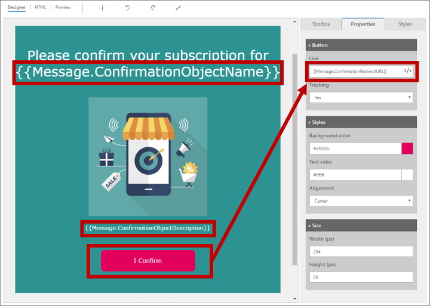
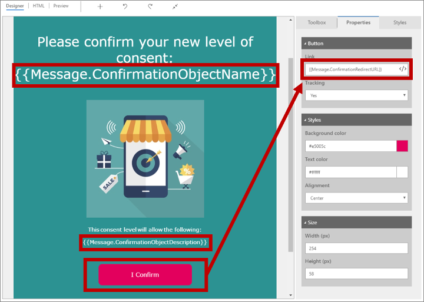
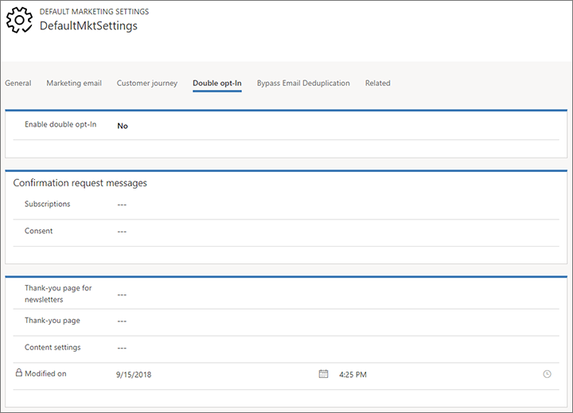

Opt-in is a process whereby a contact confirms their intent to receive information from your organization.
Whereas single opt-in is essentially any process that evaluates intent and collects contact data all in one-step (i.e., shopping cart clicks, cart abandonment, form submissions, etc.), double opt-in is a two-step process that requires the contact to perform some action, and then confirm their intent with a follow-up action.
Dynamics Marketing facilitates double opt-in by sending a confirmation email to the contact's registered email address, and asking them to click on a link in the email to confirm their request.
The two most common scenarios where double opt-in is used in Dynamics 365 Marketing are:
When a contact subscribes to a new subscription list.
When a contact increases their level of data-protection consent.
Who is this for?
While some marketing departments may have some legitimate reasons for not implementing a double opt-in system, it is generally considered a best practice for email marketing around subscription lists, since it helps to ensure that the email addresses you are sending to are valid and functional. It also helps to ensure that the contacts who are receiving your emails are the ones who requested to receive them. It is also a requirement for sending emails to contacts in the European Union.
How does it work?
In the Marketing module, the double opt-in system works as follows:
A new or existing contact uses a subscription form or landing page to subscribe to a newsletter or adjust their consent level.
On submitting the form, the contact is shown a page that tells them to check their email for a confirmation message that includes a link the contact must click on to confirm their request.
Dynamics 365 Marketing sends a confirmation email of the appropriate type (subscribe or consent) to the address registered for the contact.
The contact opens the confirmation email, reads the text, and clicks the link. This opens a web browser, which submits a coded URL that identifies the contact and request message to Dynamics 365 Marketing.
Dynamics 365 Marketing registers the click, applies the requested subscription or consent change, logs the change, and immediately redirects to a thank you page that is shown to the contact.
Double Opt-In Elements
There are two elements that need to be configured to enable double opt-ins for your Dynamics Marketing environment:
Confirmation messages are used by the system to automatically send confirmation emails to contacts. The message can be configured to include any text that you want, but it must include a link to the confirmation page.
The system provides two types of confirmation messages: subscription and consent. The subscription confirmation message is used when a contact joins a subscription list. The consent confirmation message is used when a contact increases their level of data-protection consent.
The steps are the same regardless of which type of confirmation message you want to create. The steps are as follows:
Go to the Outbound marketing area, then look under the Marketing execution header in the left-hand navigation, then select Marketing emails to open the marketing email list view.
Select New to create a new marketing email.
In the Select an email template window, go to the Filter tab, select the Purpose dropdown, and choose Double optin-in, email base confirmation from the list.
Select a template (built-in or created by your organization). The template message should already be prepared with the following:
Default content or messaging
A confirmation button preconfigured with the required target URL.
The Content type value set to Confirmation request.
The Legal designation value set to Transactional.
Customize the message as desired.
Check for errors and go live.
Subscription Confirmation Request Message

Consent Confirmation Request Message

Tags
Notice in both of the above screenshots how the "link" property for the confirmation button contains a special tag. Tags are concatenated keywords that are used to insert dynamic content into the message. This tag tells the system that this is where the confirmation URL should be inserted when the message is sent.
The following tags are available for use in both types of confirmation request messages:
Message.ConfirmationRequestType: Resolves to show the type of confirmation message this is. For subscription confirmations, this is "Marketing list subscribe" by default.
Message.ConfirmationObjectName: Resolves to the Name field of the subscription list the contact has asked to join.
Message.ConfirmationObjectDescription: Resolves to the Description field of the subscription list the contact has asked to join.
Message.ConfirmationRedirectURL: Resolves to a URL that targets the Dynamics 365 Marketing server and includes a code that uniquely identifies the contact the message was sent to and the message itself. All confirmation request messages must include a button (or link) that targets this Handlebars expression (otherwise, contacts will not be able to confirm).
Confirmation Pages
The second element that needs to be configured is a thank you page.
Note
You are not limited to just one page: It is possible in the Marketing app to configure multiple types of confirmations (which can be used to confirm a variety of channels) and each confirmation type can have its own thank you page.
When a contact clicks the confirmation link in a confirmation email, Dynamics 365 Marketing registers the confirmation, applies the requested action, and redirects the contact's browser to a thank you page. You must create your thank you pages as MARKETING PAGES in Dynamics 365 Marketing. Thank you page templates are provided out-of-the-box to help get you started.
Global Opt-In Settings
The double opt-in feature is global for your Dynamics 365 Marketing instance. When it's enabled, all new-subscriptions will require double opt-in and the same settings will apply everywhere.
To set up and enable the global double opt-in system:
Go to Settings > Advanced Settings > Marketing Settings > Default marketing settings.
A list of default settings records (usually just 1 record) will be displayed. Open the record that is currently shown as the default.
Open the Double opt-in tab:

Make the following settings:
Enable double opt-in: Set to Yes to enable global double opt-in on your instance. Set to No to disable it.
Subscriptions: Identify the marketing email message you created to send to contacts when they add themselves to a subscription list.
Consent: Identify the marketing email message you created to send to contacts when they submit a request to increase their consent level.
Thank you page for newsletters: Select a marketing page to show to contacts after they confirm a new subscription.
Thank you page: Select a marketing page to show to contacts after they confirm an increase of their consent level.
Content settings: Identify the content-settings record you chose to use for all double opt-in messages.
Select the Save button in the bottom-right corner to save the changes.
Form more information on setting up global opt-ins, see Microsoft's documentation1.
Form-Level Opt-In
Instead of enabling global double opt-in, you can choose to require double opt-in for specific subscription forms. Form double opt-in allows a contact or customer to select multiple subscription lists and opt-in through a single confirmation email. This is useful when you want to allow contacts to subscribe to multiple lists at once, but you don't want to send them multiple confirmation emails.
Note
When enabled, form double opt-in takes precedence over global double opt-in settings.
Form Subscription Confirmation Request Message
Setting up confirmation request messages for form double opt-in is similar to setting up confirmation request messages for global double opt-in. The primary difference is that there are form double opt-in templates available that you may choose from instead of the standard global double opt-in templates.
Create a Consent Form
Go to the Outbound marketing area, then look under the Internet marketing header in the left-hand navigation, then select Marketing forms to open the marketing forms list view.
Select New to create a new form.
In the Marketing form templates window, go to the Filter tab, and select the Purpose dropdown. You can choose any Form type except Forward to a friend.
Go to the Toolbox tab and add any Subscription lists by dragging and dropping any list name into the form.
Click on the Summary tab at the top of the editor.
Go to Form level double opt-In > Enable double opt-In and set the toggle to Yes.
Under Confirmation email, choose the confirmation-request email message you created in the previous section.
Choose the Content settings. Unless otherwise needed, you can choose Default Content Settings.
How to say thank you allows you to choose which page opens after the customer clicks the confirmation button in the email. You can choose a marketing page, or you can choose a custom webpage. If you choose the Open the marketing page after confirmation option, select which page to open under the Marketing Page section. Thank you marketing page templates are provided out-of-the-box to help get you started. If you choose the Open the web page after confirmation option, enter a URL in the Thank you Web Page section.
Check for errors and go live.
You can use your newly created form on a marketing page or embedded on an external website.
Creating or Updating the Default Subscription Center
To access and customize the default subscription center provided with every Dynamics 365 Marketing instance, follow these steps:
Go to Marketing > Internet marketing > Marketing pages to open a list of available marketing pages.
Find the page called "Default Marketing Page" in the list.
Select the Default Marketing Page to open it.
Go to the Summary tab and look at the Full page URL. Select the globe button to open the page in a new browser tab.
To customize the page, select Edit in the command bar and work with it as you would with any other marketing page.
Select Save when you are done customizing. The page automatically publishes your changes and returns to the live state.
Note
Important: Never delete the default subscription center page, as there is no way to create a new page published in the same manner.
To find, customize, and view the default subscription form:
Go to Marketing > Internet marketing > Marketing forms to open a list of available marketing forms.
Find the form called "Default Subscription Center Form" in the list.
Select the Default Subscription Center Form to open it.
To customize the form, select Edit in the command bar and work with it as you would with any other marketing form.
Select Save when you are done customizing. The form automatically publishes your changes and returns to the live state.
You can also create custom or additional subscription centers, published as native marketing pages on a Dynamics 365 portal or embedded on an external site. This is covered in more detail in the section on creating marketing forms. You can also visit Microsoft's documentation for more information as well.